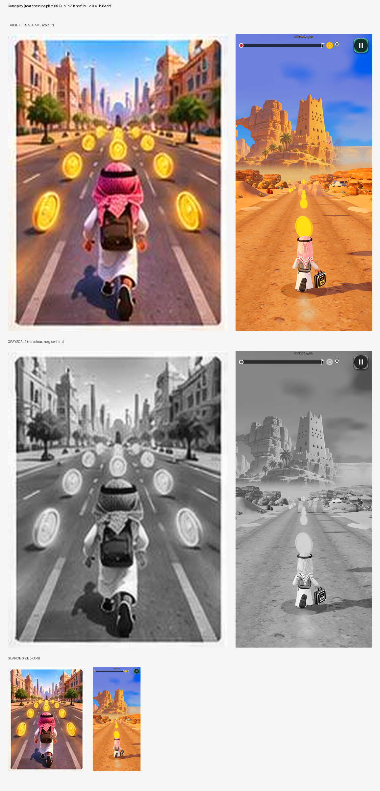
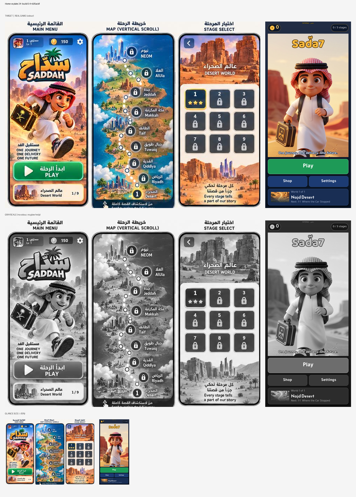
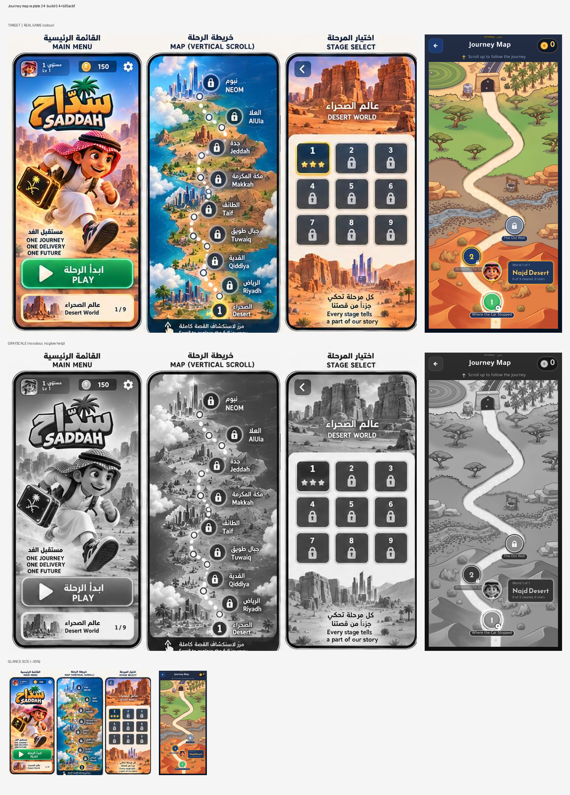
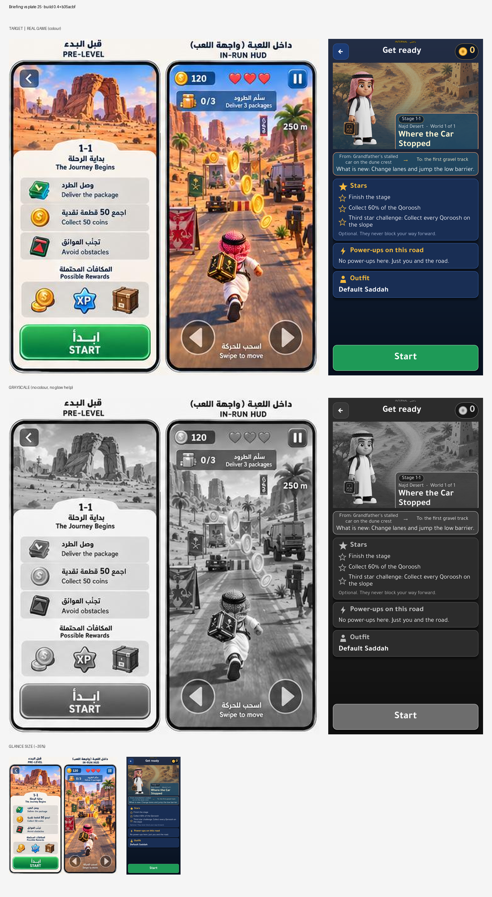
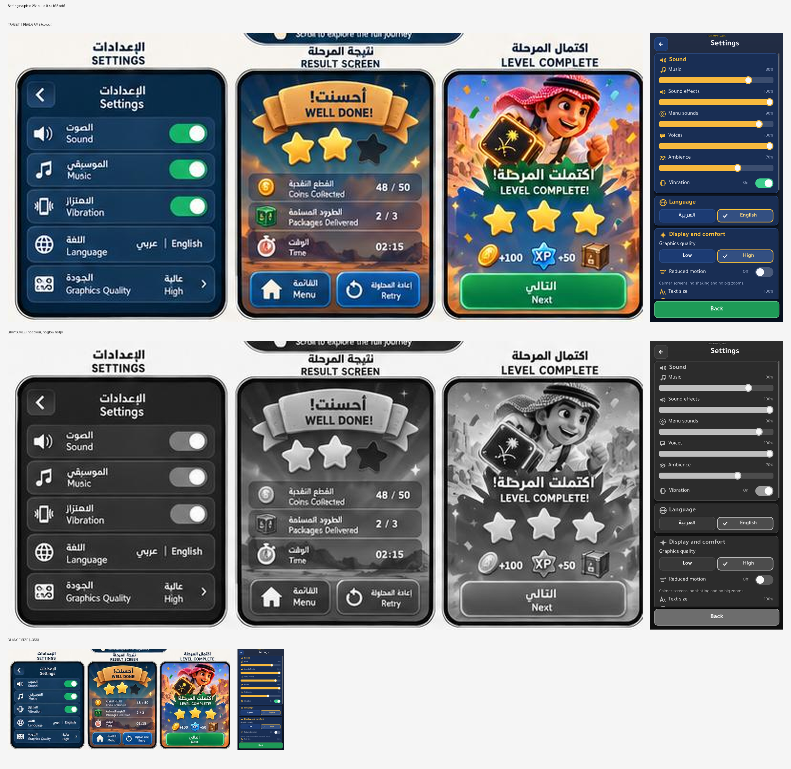
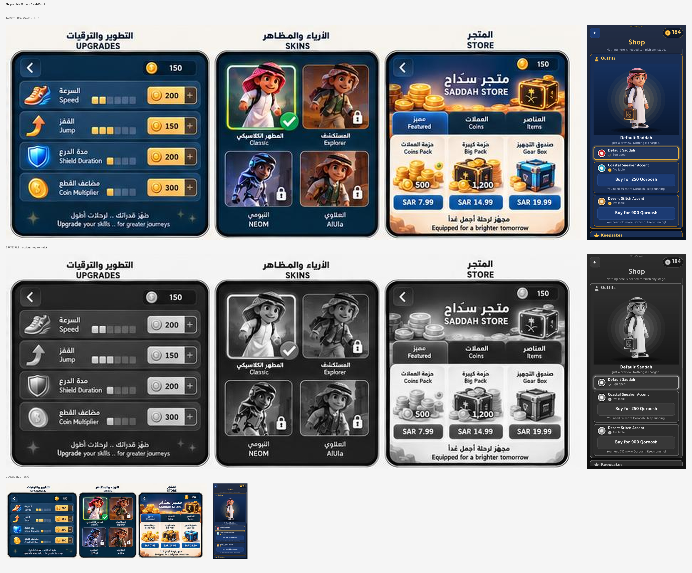

build.json · automated checks for build 0.4+b35acbf
Automated: measured from 1 bot run(s) (event logs). Targets: config/build_checks.json feel.targets (+ studio defaults). It shows pacing and systems working; it does not show that a person finds it fun.
| Target | Threshold | Passing runs | Median |
|---|---|---|---|
| Empty screen time (share of play) | ≤ 1.0 | 1/1 ✅ | 0.11 |
| Longest empty gap (s) | ≤ 999 | 1/1 ✅ | 8.0 |
| Empty gaps over 2 s | ≤ 999 | 1/1 ✅ | 1 |
| Time to first power-up P2 (s) | ≤ 999 | 0/1 ⚠️ | – |
| Time at top power level (share) | ≥ 0.0 | 1/1 ✅ | 0.0 |
| Pickups collected (share) | ≥ 0.6 | 1/1 ✅ | – |
| Bot deaths | ≤ 0 | 1/1 ✅ | 0 |
| Mean enemies on screen | ≥ 0.0 | 1/1 ✅ | 1.88 |
| Run | Unit | Result | Play s | Empty % | Longest gap | Gaps>2s | → P2 s | Time at P1/P2/P3/P4 % | Pickups | Mean enemies | Supers | Fails |
|---|---|---|---|---|---|---|---|---|---|---|---|---|
| W01-L03 | saddah | unknown | 72.0 | 11 | 8.0 | 1 | None | 0/0/0/0 | – | 1.88 | 0 | Time to first power-up P2 (s) |
Automated: each capture from this build beside its visual-bible target (sheets below), with measured differences. The numbers flag drift; they don't judge quality. Look at the sheets.
| # | Screen | Lightness (build / target) | Contrast | Colourfulness | Dark share | Highlights | Drift flags | Sheet |
|---|---|---|---|---|---|---|---|---|
| 1 | Gameplay (rear chase) vs plate 09 'Run in 3 lanes' | 61.5 / 56.5 | 11.2 / 23.2 | 52.9 / 25.7 | 0.01 / 0.05 | 0.03 / 0.2 | flatter, more saturated, missing highlights/glow | art_01.png |
| 2 | Home vs plate 24 | 50.9 / 59.5 | 28.9 / 24.9 | 27.2 / 23.8 | 0.25 / 0.06 | 0.25 / 0.25 | – | art_02.png |
| 3 | Journey map vs plate 24 | 54.6 / 59.5 | 22.3 / 24.9 | 33.4 / 23.8 | 0.15 / 0.06 | 0.1 / 0.25 | – | art_03.png |
| 4 | Briefing vs plate 25 | 27.5 / 65.4 | 19.3 / 25.0 | 21.4 / 21.4 | 0.56 / 0.05 | 0.02 / 0.36 | darker, missing highlights/glow | art_04.png |
| 5 | Settings vs plate 26 | 28.2 / 46.1 | 20.2 / 27.6 | 29.3 / 21.5 | 0.69 / 0.15 | 0.02 / 0.17 | darker, missing highlights/glow | art_05.png |
| 6 | Shop vs plate 27 | 23.6 / 47.6 | 16.3 / 31.7 | 22.7 / 17.8 | 0.64 / 0.26 | 0.03 / 0.26 | darker, flatter, missing highlights/glow | art_06.png |
| Screen | Build | Target |
|---|---|---|
| Gameplay (rear chase) vs plate 09 'Run in 3 lanes' | #ce804b #6980dd #f4aa50 #966256 #baa493 #c48a6a | #946257 #8f524e #b98973 #5e403c #fce8be #c0d3de |
| Home vs plate 24 | #1e2134 #e1d3c4 #a75440 #3e4259 #989b70 #f3ddb6 | #b07657 #464149 #f8f1e7 #417081 #a0aca8 #efb98b |
| Journey map vs plate 24 | #dd7642 #3f323d #af9268 #92b463 #866d53 #eed0a1 | #b07657 #464149 #f8f1e7 #417081 #a0aca8 #efb98b |
| Briefing vs plate 25 | #173257 #0a1323 #6f9870 #203454 #56595a #1a2741 | #f9f5ef #c88661 #614645 #b7c5c5 #6e7f7c #f3cdaa |
| Settings vs plate 26 | #192e54 #617261 #162540 #1d2e4c #182e54 #192e53 | #0e3250 #417177 #a17c68 #42414d #f8e9d0 #b1baab |
| Shop vs plate 27 | #1d3053 #2b3e60 #1d2a44 #0d1c37 #162f5b #887d77 | #092a44 #203c59 #85807a #f9f1e3 #53403f #ddd9cc |
Target: every role pair ≥ 25.0.
| Roles | Closest pair ΔE | Result |
|---|---|---|





